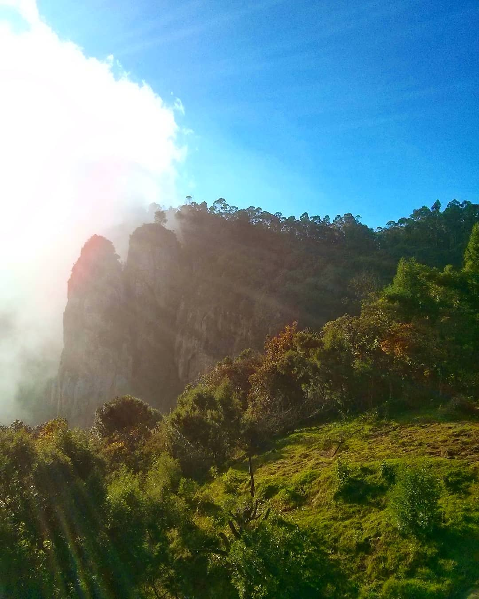

It is a place with fascinating history located 8kms from lake and it constitues of three granite boulders and each of a height of 400 feet. It is beautiful place, to visit in the morning and freezing atmosphere.
Locals believe that the rocks embody Lord Ganesha, as their shape resembles that of the Lord's face. The spot is even termed Pillayar, which means Ganesha in Tamil. Mist and fog play hide and seek with pillars and when fog enshrouds the rocks, it looks ethereal. A Between these magnificent Pillar Rocks in Kodaikanal.
Location: Coaker's Walk, Kodaikanal, Tamil Nadu 624101.
Contact: 092442 43940
Route: 2.5 km from Pillar Rock.
Location: #22, La Providence, St Mary's Rd, Kodaikanal, Tamil Nadu 624101.
Contact: 08071 077 701
Location: 6FPR+97G, Club Rd, next to Pizza Corner, Kodaikanal, Tamil Nadu 624101.
Contact: 04542 240 413

Location: Lake Rd, Kodaikanal, Tamil Nadu 624101.
Contact: 04542 248 555